Kasa uzajamne pomoći - Uputa
1. Postavke
Prije početka rada u aplikaciji potrebno je urediti postavke.
Postavkama se pristupa kllikom na Postavke / Generalne Postavke u desnom izborniku
1.1 Generalne postavke
U generalne postavke spremaju se konstantne vrijednosti koje koriste na razini cijele aplikacije, a to su:
- Valuta
- Zadani mjesečni ulog
- Manipulativni troškovi (koeficjent, za 2% koefcijent je 0.02)
- Zadani rok otplate u mjesecima
- Šifre konta za pojedinu vrestu prometa
- Početno stanje žiro računa sa danom početka korištenja aplikacije
- Početno stanje prihoda
- Postavke ispisa
1.2 Poslovne jedinice
Za dodavanje nove poslovne jedinice kliknuti na dugme Plus.
Upisati kod (šifru) poslovne jedinice, naziv i kliknuti na Spremi.
2.1 Novi korisnik
Za dodavanje novog korisnika kase uzajamne pomoći u desnom izborniku kliknite na Novi korisnik. Popunite sva polja i kliknite na tipku Spremi.
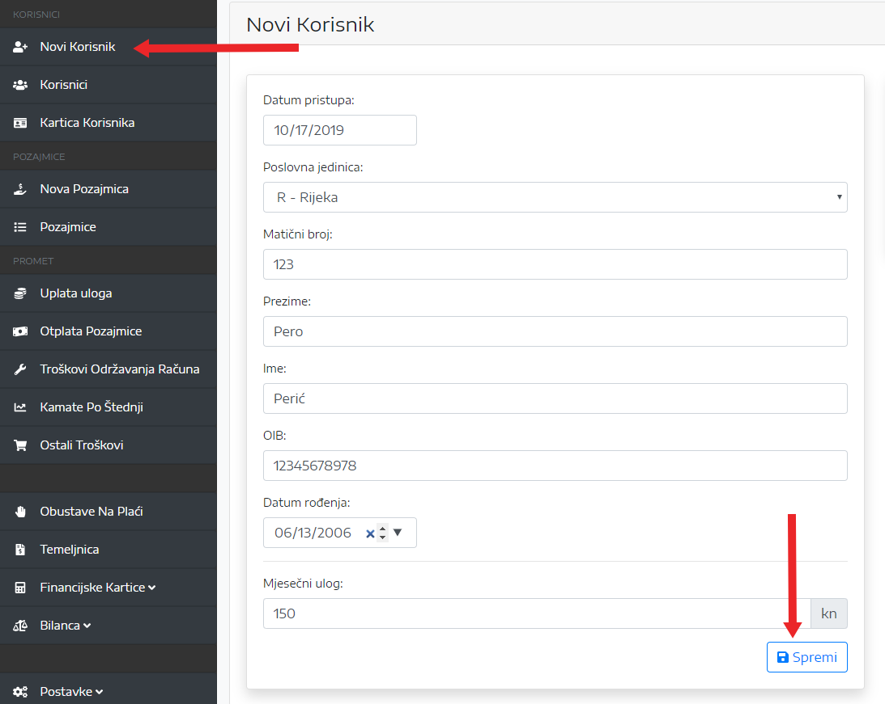Za ispis pristupnice u PDF formatu kliknuti na Kreiraj PDF. Nakon što je PDF kreiran kliknite na Preuzmi PDF.
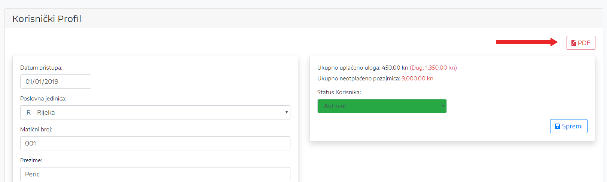 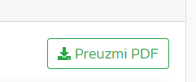2.2 Pretraga korisnika
Za pretragu korisnika kliknite na Korisnici, zatim u polje Pretraži... upišite ime ili prezime korisnika kojeg tražite i kliknite na ikonicu za pretragu ili tipku Enter.
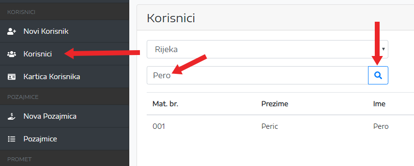Korisničkim podacima i kartici korisnika pristupate klikom na ikone označene na slici.
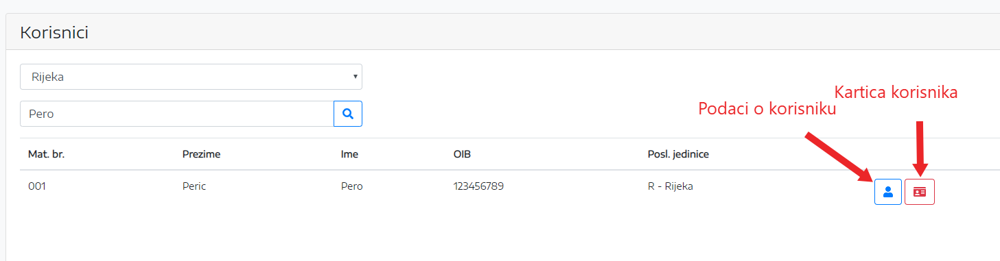2.3 Kartica korisnika
Kartici korisnika se pristupa klikom na Kartica korisnika ili preko pretrage korisnika (vidi točku 1.2)
Odabrati korisnika iz padajučeg izbornika, godinu i kliknuti na ikonu Filter.
2.4 Ispis kartica
Za ispis kartice korisnika kliknuti na dugme PDF. Nakon što se pojavi Preuzmi PDF, kliknuti desni klik i stisnuti Save target as. Datoteku spremiti na lokalni disk.
Za ispis svih korisnika istovremeno, odabrati poslovnu jedinicu, godinu i kliknuti na Spremi sve kartice u ZIP. Nakon što se kreira PDF, stisnuti desni klik na datoteku i kliknuti na Save target as.
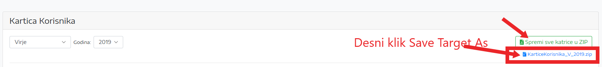Odabrati lokaciju na računalu i stisnuti Save.
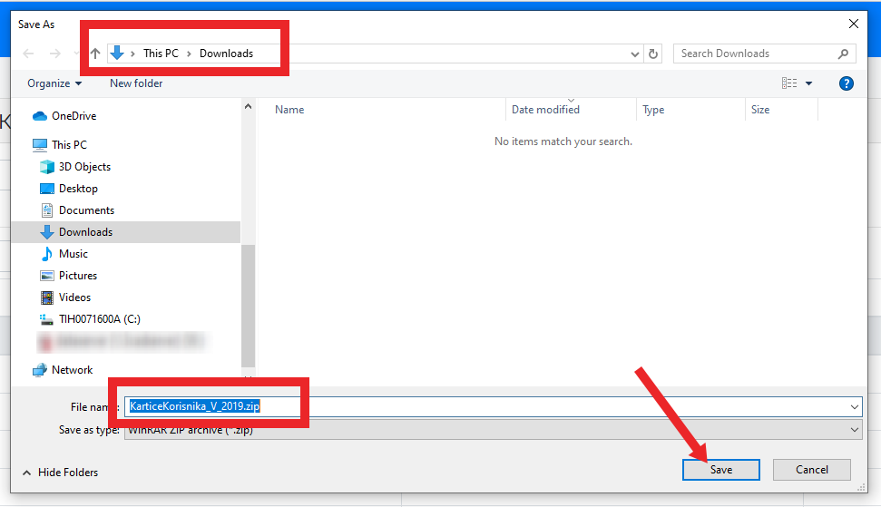Otvoriti lokaciju na kojoj je spremljena ZIP datoteka, desni klik na datoteku i kliknuti na Extract Here.
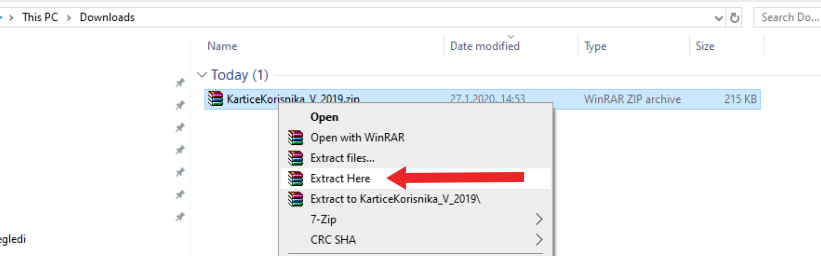Otvoriti sve foldere unutar root direktorija dok se ne dođe do PDF datoteka.
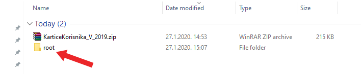2.4.1 Ispis (Metoda 1.)
Za ispis svih kartica na printeru, označiti sve datoteke (Ctrl+A), desni klik na mišu i kliknuti na Print.
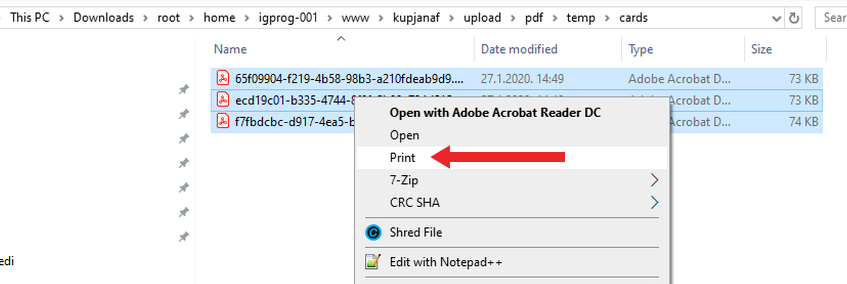2.4.2 Ispis (Metoda 2.)
Kartice je moguće isprintati pomoću programa PrintKUP. Klikom na dugme Pretraži odaberemo putanju (folder) u kojemu se nalaze pozajmice (PDF datoteke). Poželjno je ne stavljati sve pozajmice u jedan folder već ih odvajati npr. prema poslovnim jedinicama. Nakon što se klikne na dugme ISPIS, kartice se automatski šalju na printer jedna po jedna u razmaku od 10 sekundi. Razmak između ispisa se može smanjiti ili povećati u Postavkama.
Za rad aplikacije je potrebno imati instaliran Acrobat Reader. U postavkama mora biti definirana putanja od AcroRd32.exe.
2.5 Isčlanjenje korisnika
Za isčlanjenje korisnika potrebno je otvoriti korisnički profil korisnika (vidi točku 1.2).
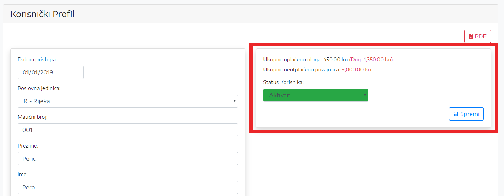Pod status korinsnika odabrati Neaktivan, odabrati datum isčlanjenja i kliknuti Spremi.
Ako se korisnik želi isčlaniti, a nije podmirio dug, onda se preostali dug automatski oduzima od uloga, a korisniku se isplaćuje ostatak.
3.1 Nova pozajmica
U desnom izborniku kliknuti na Nova Pozajmica.
Odabrati korisnika, upisati iznos pozajmice i rok otplate u mjesecima ili iznos mjesečne rate za otplatu i kliknuti Spremi.
Za ispis kliknuti na PDF.
3.2 Pretraga pozajmica
Za pretragu pozajmica kliknuti na Pozajmice u desnom izborniku.
Pretraživati se može po poslovnoj jedinici, mjesecu i godini ili po imenu i prezimenu korisnika pozajmice.
Za prikaz više detalja o pozajmici kliknuti na dugme označeno na slici.
3.3 Otplata pozajmice
U desnom izborniku kliknuti na Otplata Pozajmice.
Odabrati poslovnu jedinicu, mjesec godinu i kliknuti na dugme Filter.
Za odabranog korisnika kliknuti na strelicu u koloni Ugovorena rata ili ručno upisati željeni iznos u polje u koloni Uplaćeno
i kliknuti na tipku Spremi.
U slučaju kada korisnik sam uplaćuje ratu pozajmice na žiro račun KUP-a (npr. u slučaju kada korisnik ima zaštićeni račun pa mu se ne može izvršit obustava na plaći ili u slučaju povrata pogrešno uplaćene pozajmice na račun korisnika), treba kliknuti na dugme Uplata korisnika nakon čega se otvara novo polje za unos. Upisati datum i iznos i kliknuti na dugme Spremi.
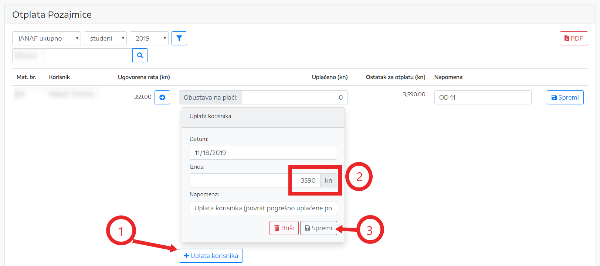4. Uplata uloga
U desnom izborniku kliknuti na Uplata Uloga.
Odabrati poslovnu jedinicu, mjesec godinu i kliknuti na dugme Filter.
Za odabranog korisnika kliknuti na strelicu u koloni Ugovoreni ulog ili ručno upisati željeni iznos u polje u koloni Uplaćeno
i kliknuti na tipku Spremi.
U slučaju kada korisnik sam uplaćuje ulog na žiro račun KUP-a (npr. u slučaju kada korisnik ima zaštićeni račun pa mu se ne može izvršit obustava na plaći), treba kliknuti na dugme Uplata korisnika nakon čega se otvara novo polje za unos. Upisati datum i iznos i kliknuti na dugme Spremi.

5. Ostali prihodi i rashodi
Pod ostale prihode i rashode spadaju troškovi održavanja računa, kamate po štednji i ostali troškovi.
Iz desnog izbornika odabrati vrstu troška, selektirati godinu i kliknuti na Filter.
Kliknuti na dugme Novi Unos, odabrati datum, upisati iznos i opis i kliknuti na dugme Spremi.
6. Mjesečna isplata
Za prikaz svih mjesečnih isplata sa žiro računa kliknuti na Mjesečna isplata.
Odabrati mjesec i godinu i kliknuti na Filter.
U tablici su prikazne sve isplate u tekućem mjesecu (isplate pozajmica, isplate kod iščćanjenja, troškovi održavanja računa i razni materijalni troškovi).
7. Obustave na plaći
Za prikaz obustava na plaći kliknuti na Obustave Na Plaći.
Odabrati poslovnu jedinicu mjesec i godinu i kliknuti na Filter.
Moguć je prikaz ukupnih obustava (ulog + pozajmice) ili po poslovnim jedinicama.
8. Temeljnica
Za prikaz temeljnice kliknuti na Temeljnica.
Odabrati mjesec i godinu i kliknuti na Filter.
U tablici su prikazne sve isplate u tekućem mjesecu (isplate pozajmica, isplate kod iščćanjenja, troškovi održavanja računa i razni materijalni troškovi).
9. Financijske kartice
Za prikaz Financijskih kartica kliknuti na Financijske Kartice.
Odabrati godinu i kliknuti na Filter.
Program daje ispis ukupnog prometa (mjesečno i kumulativno) za odabranu godinu i to za promet uloga, pozajmica, manipulativnih troškova, troškova održavanja računa,
kamata po štednji i raznih materijalnih troškova.
10. Bilanca
Za pregled bilance kliknuti na Bilanca.
Odabrati godinu i kliknuti na Filter.
U tablicama su dani podaci o ukupnim prihodima, rashodima i razlici rashoda i prihoda za odabranu godinu, kao i temeljnica.
11 Dodatak
11.1 Instalacija programa PrintKUP
Zip datoteku PrintKUP.zip možete pruzeti ovdje.Postupak preuzimanja:
1. Google Chrome:
2. Microsoft Edge:
Otvorite datoteku PrintKUP.zip, zatim dvostrukim klikom pokrenite setup.exe.
Kliknite na tipku Install.
Za pokretanje programa kliknuti na Search i upisati printkup.